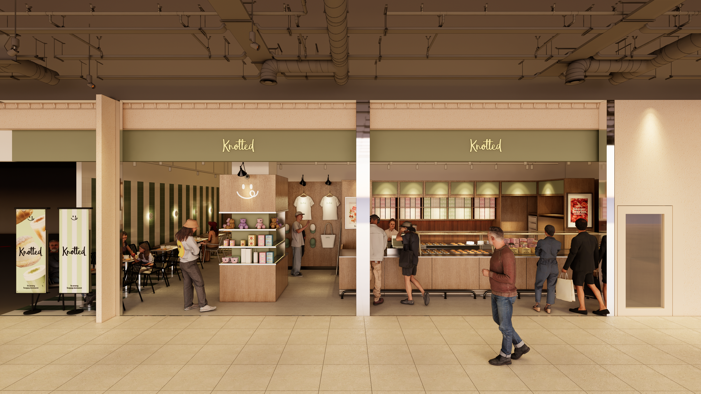
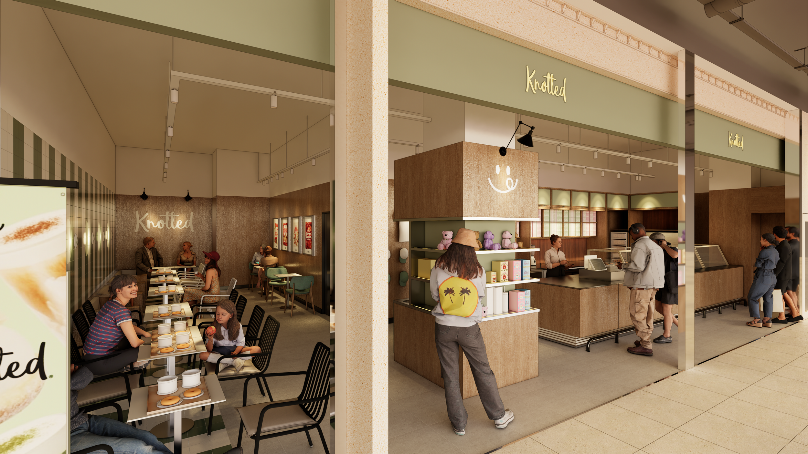
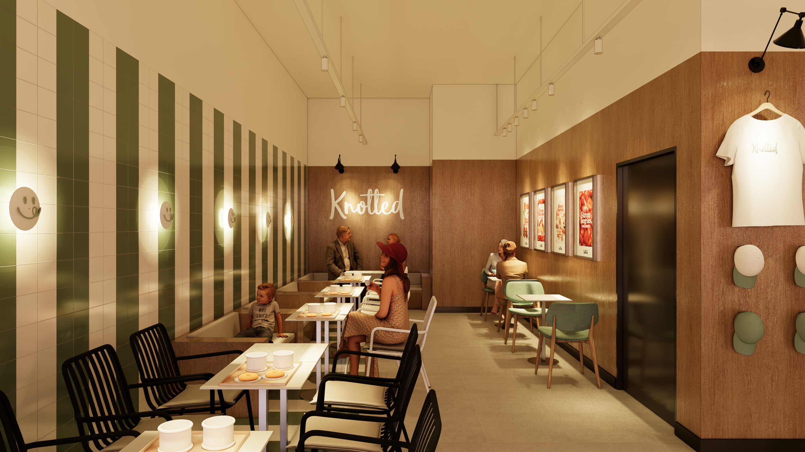
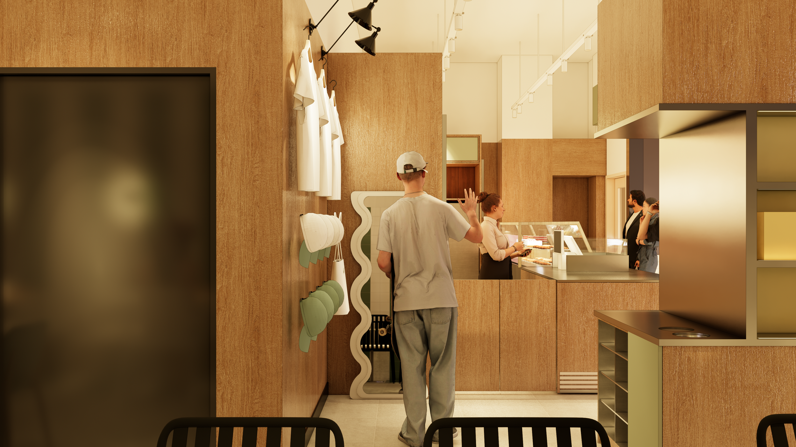
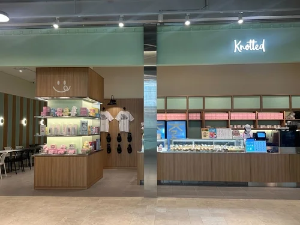
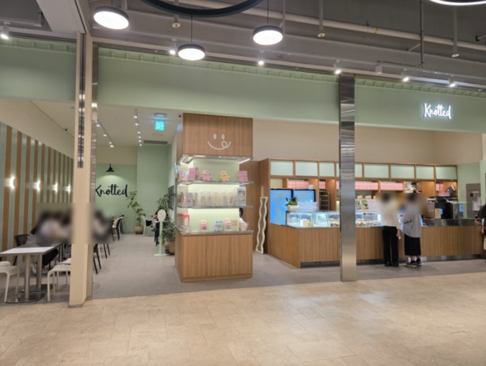
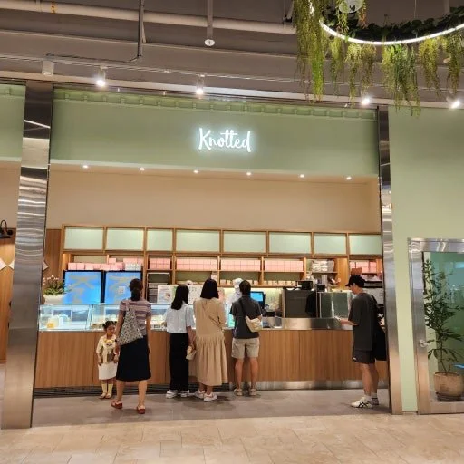
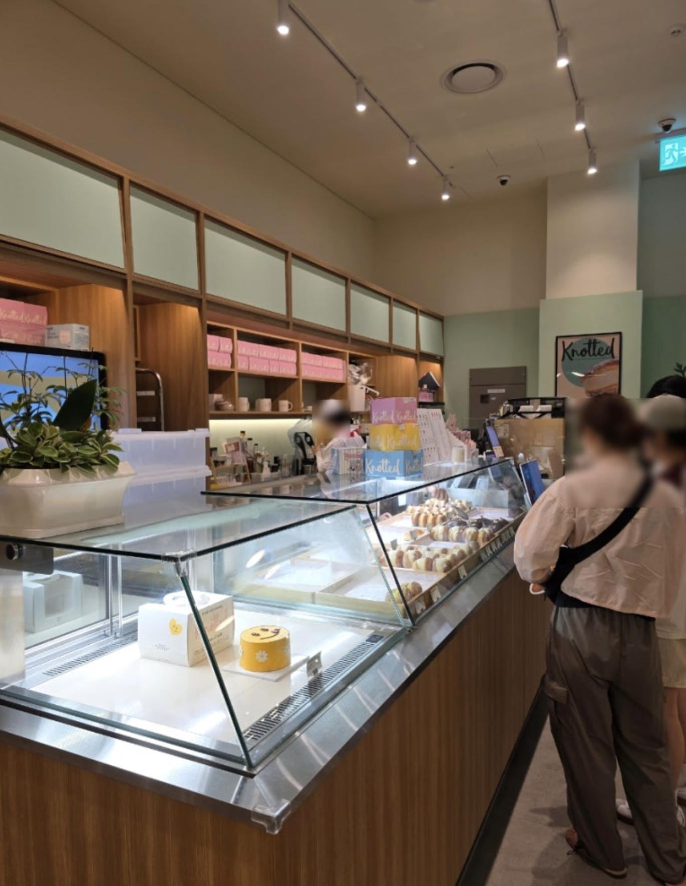
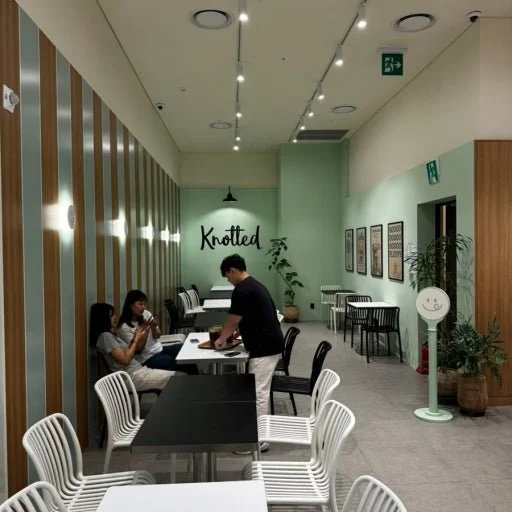
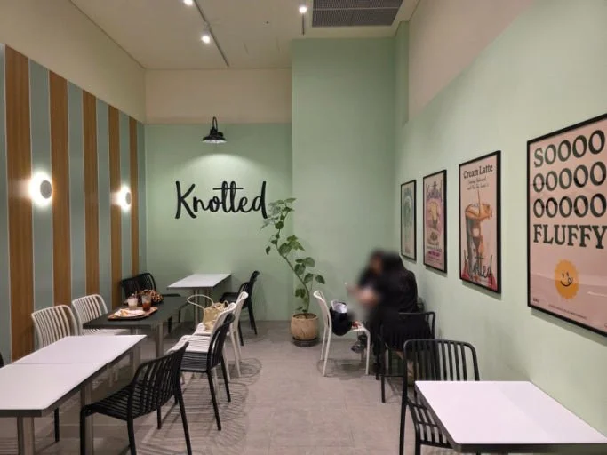

Knotted Guui노티드 구의
Bakery, café and lifestyle retail folded into one plan.베이커리·카페·라이프스타일 리테일을 하나의 평면으로.






- Client클라이언트
- GFFGGFFG
- Location장소
- Guui, Seoul서울 구의
- Year연도
- 20242024
- Role역할
- Creative Director크리에이티브 디렉터
- Scope범위
- Store concept, retail zoning, merchandise display integration매장 컨셉, 리테일 존닝, 굿즈 디스플레이 통합
Guui is where Knotted stopped being only a bakery. Zoning does the strategic work: come for a donut, leave having handled the brand’s products.
구의는 노티드가 베이커리만이 아니게 된 지점입니다. 존닝이 전략을 수행합니다. 도넋을 사러 왔다가 제품을 만져보고 나가게.




How a bakery becomes a lifestyle brand.베이커리가 라이프스타일 브랜드가 되는 방법.